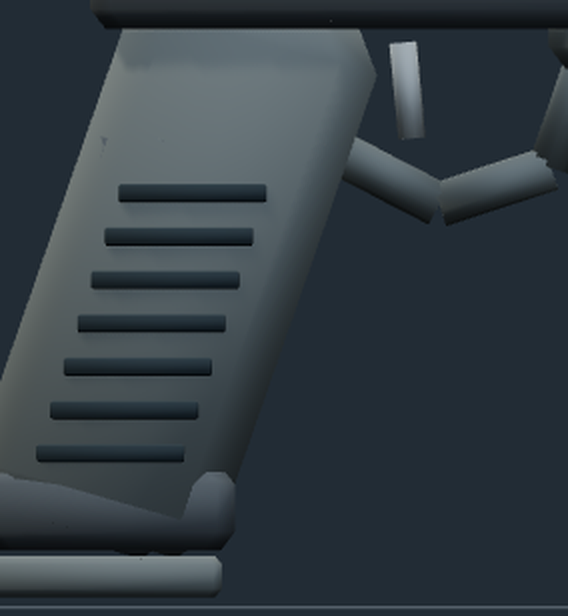
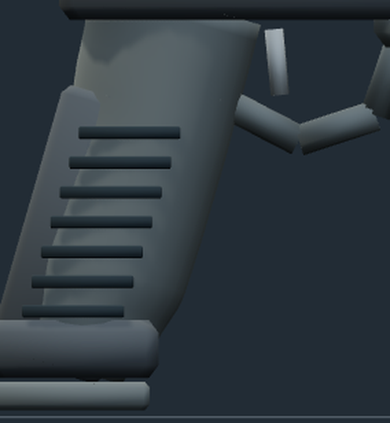
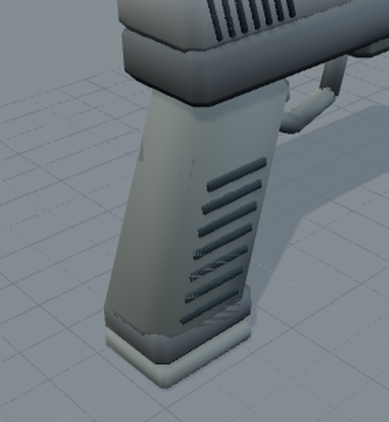
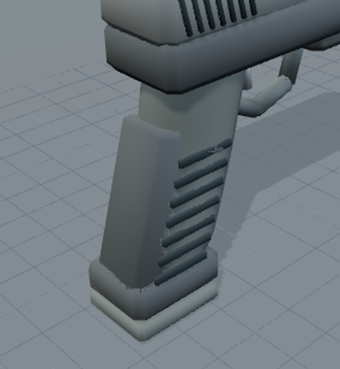

<!doctype html>
<html lang="pt-BR"><meta charset="utf-8">
<title>02-01 — recorte do grip</title>
<style>body{margin:0;background:#14171a;color:#e6edf3;font:13px system-ui;display:flex;gap:10px;padding:10px;flex-wrap:wrap}figure{margin:0;background:#0b0d0f;border:1px solid #2b3238;border-radius:6px;padding:6px}img{display:block;width:520px}figcaption{color:#9aa7b2;padding-bottom:6px}</style>
<figure><figcaption>Antes — vista direita</figcaption></figure>
<figure><figcaption>Depois — vista direita</figcaption></figure>
<figure><figcaption>Antes — perspectiva</figcaption></figure>
<figure><figcaption>Depois — perspectiva</figcaption></figure>
</html>
